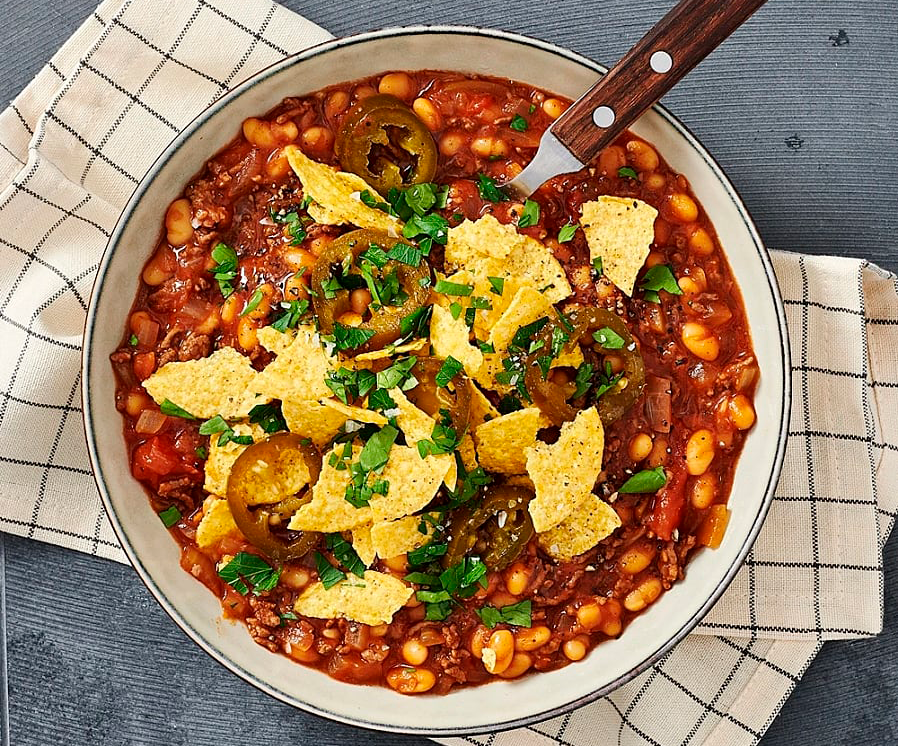

FoodieFiesta
Hem
Recept
Restauranger
Kontakt
Recept
Här hittar du recept för alla typer av middagar, från nyår till lunch dagen efter
Populära recept just nu
Hamburgare
En saftig hamburgare för hela familjen
Till recept
Carbonara
Klassisk italiensk pasta
Till recept

Chili Con Carne
Köttgryta från Mexiko
Till recept